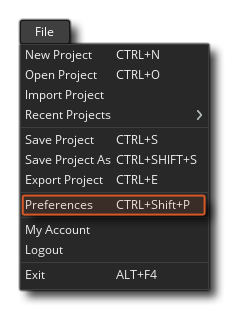

La fenêtre Préférences est une partie essentielle de GameMaker Studio 2, car elle vous permet de configurer et de personnaliser votre expérience à l'aide de l'EDI, ainsi que de configurer tout SDK de plate-forme spécifique, etc.... Cette section couvre les domaines spécifiques de l'EDI: la fenêtre des préférences - pour les plates-formes cibles individuelles, veuillez consulter la section Préférences de la plate-forme cible. Notez qu'après avoir modifié les préférences de cette fenêtre, vous devez cliquer sur le bouton Appliquer pour les appliquer.
Si, après avoir modifié les options ici pour personnaliser GameMaker Studio 2 selon vos goûts, vous souhaitez sauvegarder les préférences que vous avez définies, vous devez accéder au dossier. %AppData%/GameMakerStudio2/<your_account_name>/ puis copiez les deux fichiers suivants dans un endroit sûr:
Toutefois, si vous souhaitez réinitialiser les préférences que vous avez modifiées, vous devez cliquer sur le bouton Restaurer les paramètres par défaut en haut de la fenêtre. Notez que cela ne restaurera que les valeurs par défaut pour la section en cours de modification.
Vous pouvez ouvrir les préférences de GameMaker Studio 2 partir du menu Fichier en haut à gauche de l'EDI: 
Une fois la fenêtre Préférences ouverte, vous aurez les différentes options suivantes:
Notez qu'il ya aussi une section pour la plate - forme Préférences spécifiques qui figure dans cette section du manuel ici.